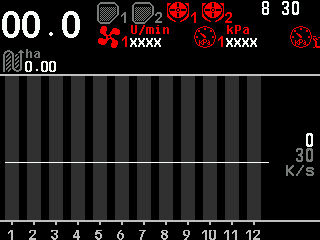

HUB-8-Verteiler konfigurieren
Stellen Sie die acht Kanäle eines HUB-8-Verteilers am Hectare Mini ein – wofür jeder Kanal steht und die Kurzbefehle, die alle Kanäle auf einmal füllen.
Ein HUB-8-Verteiler sammelt bis zu acht Sensoren und steht im Sensornetz stellvertretend für jeden von ihnen: Jeder Kanal erscheint dem Panel als Eingangsmodul oder als Kornsensor mit eigener Adresse. Die Konfiguration sagt jedem Kanal, wofür er steht und der wievielte seiner Gruppe er ist. Sie erfordert die Ebene „Service“. Bereiten Sie zuerst vor wie in Gerätekonfiguration: nur der Verteiler am Kabelbaum, Menü „Sensorkonfiguration“ geöffnet.
Wählen Sie in „Sensorkonfiguration“ „HUB8“ und drücken Sie „MENU“. Das Menü zeigt „Geräteadresse“, dann je Kanal ein Paar „Kanal 1 Typ“ und „Kanal 1 Adresse“, bis Kanal 8, und am Ende „Einstellen“.
Lassen Sie „Geräteadresse“ auf „AUTO“.
Wählen Sie „Kanal 1 Typ“ und bestimmen Sie mit „PLUS“ / „MINUS“, wofür der Kanal steht: „Eingangsmodul“ oder „Kornsensoren“.
Wählen Sie „Kanal 1 Adresse“ und stellen Sie mit „PLUS“ / „MINUS“ ein, das wievielte Gerät seiner Gruppe dieser Kanal ist – seine laufende Nummer unter den Eingangsmodulen oder unter den Kornsensoren.
Verfahren Sie ebenso mit den Kanälen 2 bis 8.
Wählen Sie „Einstellen“ und drücken Sie „MENU“. Das Panel antwortet mit „Fertig“.
Trennen Sie den Verteiler und schließen Sie ihn wieder an. Kehren Sie mit „BACK“ zum Startbildschirm zurück. Die Geräte an seinen Kanälen müssen sich wieder melden; solange der Verteiler abgesteckt ist, sind sie rot durchgestrichen.

Der Startbildschirm bei abgestecktem Verteiler: Dosierer, Gebläse und Drucksensoren sind durchgestrichen.
Wenn alle Geräte fertig sind, kehren Sie auf „Fahrer“ zurück – stellen Sie „Benutzer“ in „Einstell.“ zurück oder schalten Sie das Panel aus und wieder ein – und schließen Sie alle Geräte wieder an.
Kurzbefehle
- Halten Sie „MENU“ auf einem der Punkte „Kanal 1 Typ“ bis „Kanal 8 Typ“: Alle folgenden Kanäle erhalten denselben Typ, und ihre Adressen werden ab diesem Kanal fortlaufend nummeriert.
- Halten Sie „MENU“ auf einem der Punkte „Kanal 1 Adresse“ bis „Kanal 8 Adresse“: Die folgenden Kanäle desselben Typs werden ab diesem fortlaufend nummeriert.
- Halten Sie „MENU“ auf „Geräteadresse“: Das Panel sucht nach einem Verteiler und liest seine aktuellen Kanaleinstellungen in das Menü ein. Halten Sie erneut für den nächsten.
Wenn Sie einen Kanaltyp ändern, springt die Adresse dieses Kanals auf die erste freie des neuen Typs. Haben zwei Kanäle desselben Typs am Ende dieselbe Adresse, weist „Einstellen“ mit „Ungültiges Profil!“ ab. Die übrigen Meldungen: Die Regeln jeder Konfiguration.
Ihre Maschine tut etwas, das diese Seite nicht beantwortet? Schreiben Sie an support@agriwelt.com — es antwortet ein Ingenieur.